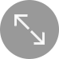

<!DOCTYPE html>
<html xmlns="http://www.w3.org/1999/xhtml" lang="zh-CN">
<head>
<meta charset="utf-8" />
<meta http-equiv="X-UA-Compatible" content="IE=edge">
<meta name="viewport" content="width=device-width, initial-scale=1.0,  user-scalable=no" />
<script src="js/template-native.js"></script>
<script src="js/jquery.min.js"></script> 
<script src="js/common.js"></script>

<link href="css/bootstrap.css" rel="stylesheet" />
<link href="css/life.css" rel="stylesheet" />
</head>

<!-- 列表模板2（包含：社区视频监控列表） -->
<body id="lifecirclebody">
<script id="template" type="text/html">

<!-- 顶部返回导航条，包含自动判断添加的发布按钮 -->
<div class="news-title-bar">
	<div class="container">
		<a class="return" href="<%=page_back_src%>">返回</a>
		<h4><%=page_title%></h4>
	</div>
</div>

<div class="news-con-bar" style="margin-top: 0;">
	<!-- 顶部的推荐视频 -->
	<div class="big-monitor-bar">
		<a href="<%=liveObjs[0].liveObj_src%>">
		<div class="big-monitor">
			" alt="" />
			<div class="icon-enlarge"></div>
		</div>
		</a>
	</div>
	<!-- 接下来是视频列表 -->
	<div class="sm-monitor-list  container">
		<div class="row" style="margin-right: -5px;margin-left: -5px;">
			<ul class="clearfix">
			<% for (i=1, l=liveObjs.length; i<l; i++) { /* 循环从1开始，0是顶部推荐元素 */ %>
				<li class="col-xs-6">
					<a href="<%=liveObjs[i].liveObj_src%>">
						<div class="sm-monitor">
							" alt="" />
							<p class="monitor-info"><%=liveObjs[i].liveObj_title%></p>
						</div>
					</a>
				</li>
			<% } %>
			</ul>
		</div>
	</div>
</div>

</script>
</body>
</html>
